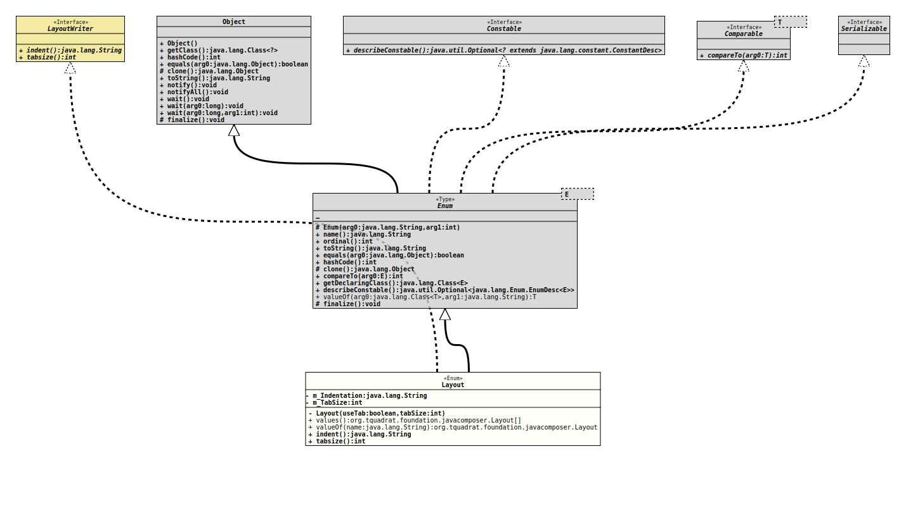

Enum Class Layout
- All Implemented Interfaces:
Serializable,Comparable<Layout>,Constable,LayoutWriter
@ClassVersion(sourceVersion="$Id: Layout.java 855 2021-01-21 20:22:52Z tquadrat $")
@API(status=STABLE,
since="0.0.5")
public enum Layout
extends Enum<Layout>
implements LayoutWriter
The various possible layouts for the output created by
JavaFile.- Author:
- Thomas Thrien (thomas.thrien@tquadrat.org)
- Version:
- $Id: Layout.java 855 2021-01-21 20:22:52Z tquadrat $
- Since:
- 0.0.5
- UML Diagram
-

UML Diagram for "org.tquadrat.foundation.javacomposer.Layout"
{kind=link}
-
Nested Class Summary
Nested classes/interfaces inherited from class java.lang.Enum
Enum.EnumDesc<E extends Enum<E>> -
Enum Constant Summary
Enum ConstantsEnum ConstantDescriptionThe default layout; same asLAYOUT_JAVAPOET.The layout as used for the Foundation library.The layout for the original JavaPoet.The layout for the original JavaPoet, but using the tabulator character for the indentation, instead of blanks. -
Field Summary
FieldsModifier and TypeFieldDescriptionprivate final StringThe indentation String.private final intThe tabulator size. -
Constructor Summary
ConstructorsModifierConstructorDescriptionprivateLayout(boolean useTab, int tabSize) Creates a new instance forLayout. -
Method Summary
Modifier and TypeMethodDescriptionfinal Stringindent()Returns the indentation String for this layout.final inttabsize()Returns the tabulator size this layout was configured with.static LayoutReturns the enum constant of this class with the specified name.static Layout[]values()Returns an array containing the constants of this enum class, in the order they are declared.
-
Enum Constant Details
-
LAYOUT_FOUNDATION
The layout as used for the Foundation library.
The layout of the generated Java file does not follow that of the Foundation library source completely as this would require to much effort to implement. Additionally, the code that is provided for the method bodies will not be parsed, so variations in the layout here will not be corrected.
Here must be especially mentioned the methods
CodeBlock.Builder.beginControlFlow(String, Object...),CodeBlock.Builder.nextControlFlow(String, Object...)andCodeBlock.Builder.endControlFlow(String, Object...): these will generate code like this:if( flag ) { doThis(); } else { doSomethingDifferent(); }while the Foundation layout would look like this:
if( flag ) { doThis(); } else { doSomethingDifferent(); }But these differences are seen as neglectable.
TODO Adjust this comment!! -
LAYOUT_JAVAPOET
The layout for the original JavaPoet. -
LAYOUT_JAVAPOET_WITH_TAB
The layout for the original JavaPoet, but using the tabulator character for the indentation, instead of blanks. -
LAYOUT_DEFAULT
The default layout; same asLAYOUT_JAVAPOET.
-
-
Field Details
-
m_Indentation
The indentation String. -
m_TabSize
The tabulator size.
-
-
Constructor Details
-
Layout
Creates a new instance forLayout.- Parameters:
useTab-trueif the tabulator should be used for the indentation,falseif blanks should be used.tabSize- The tabulator size.
-
-
Method Details
-
values
Returns an array containing the constants of this enum class, in the order they are declared.- Returns:
- an array containing the constants of this enum class, in the order they are declared
-
valueOf
Returns the enum constant of this class with the specified name. The string must match exactly an identifier used to declare an enum constant in this class. (Extraneous whitespace characters are not permitted.)- Parameters:
name- the name of the enum constant to be returned.- Returns:
- the enum constant with the specified name
- Throws:
IllegalArgumentException- if this enum class has no constant with the specified nameNullPointerException- if the argument is null
-
indent
Returns the indentation String for this layout.- Specified by:
indentin interfaceLayoutWriter- Returns:
- The indentation.
-
tabsize
Returns the tabulator size this layout was configured with.- Specified by:
tabsizein interfaceLayoutWriter- Returns:
- The tabulator size.
-